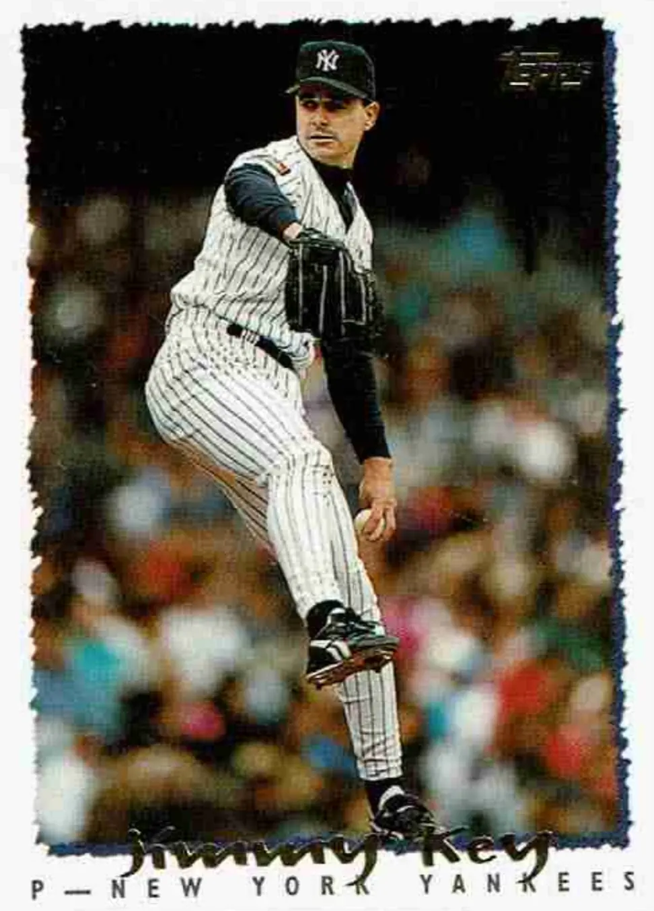

Jimmy Key
Career Highlights & Facts
(Facts are AI-generated and may require verification)
- Won World Series titles with both the Toronto Blue Jays in 1992 and the New York Yankees in 1996.
- Finished as the runner-up for the American League Cy Young Award in both 1987 and 1994.
- Led the American League with a 2.76 ERA and a 1.057 WHIP during the 1987 season.
Would you like to find out more about Jimmy Key?
Career Totals
| WAR | W | L | ERA | G | GS | SV | IP | SO | WHIP |
|---|---|---|---|---|---|---|---|---|---|
| 48.9 | 186 | 117 | 3.51 | 470 | 389 | 10 | 2591.2 | 1538 | 1.229 |
Statistics via Baseball-Reference.com
The Original Clue